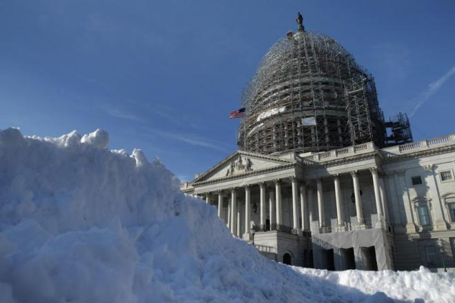

| The Truth | |
|---|---|
| Internacional | |
ÚLTIMA HORALos yihadistas del 13-N decapitaron a rehenes antes de viajar a Francia
La productora Al Hayat, brazo mediático del Estado Islámico (ISIS, en sus siglas en inglés), ha difundido un vídeo de una brutalidad inusual con imágenes, proclamas y decapitaciones inéditas de los autores de los atentados de París, el pasado 13 de noviembre. Bajo el título "Mátalos a todos allí donde los encuentres", en un claro llamamiento a lobos solitarios, la grabación, de algo más de 17 minutos, monta imágenes del asalto coordinado en la capital francesa con discursos propagandistas tanto del presunto cerebro de la masacre, Abu Omar al Baljiki, como de los otro ocho terroristas que golpearon París | |
PolíticaTrump: “Podría disparar a gente en la Quinta Avenida y no perdería votos”
Donald Trump ha vuelto a levantar la polémica con un nuevo exabrupto. "Tengo a la gente más leal, ¿Alguna vez habéis visto algo así? Podría pararme en mitad de la Quinta Avenida y disparar a gente y no perdería votantes", dijo el precandidato republicano a la presidencia de Estados Unidos este domingo en un acto de campaña en la ciudad de Sioux Center, en Iowa. Los líderes de Australia piden que el país se convierta en una república
Los dirigentes de siete de los ocho Estados y territorios de Australia han firmado este lunes un documento en el que piden que el país se convierta en una república, lo que supondría abandonar su actual forma de Estado, una monarquía constitucional, con la reina Isabel II de Inglaterra como jefa de Estado. | |
NoticiasMás de 1000 vuelos cancelados en EEUULas principales aerolíneas estadounidenses anunciaron este jueves la cancelación de más de 1.000 vuelos programados para el viernes y el sábado ante la previsión de que una tormenta de nieve que podría marcar récords alcance una vasta zona del este de EEUU Adolescentes palestinos en misión suicida
A sus 13 años, el palestino Mohamed Aju-Jedhai, se suma a la lista cada vez más amplia de jóvenes abatidos en sus ataques a israelíes desde el inicio de la escalada en octubre. Un tercio de los atacantes tenía menos de 20 años en la 'Intifada de los cuchillos'. | |